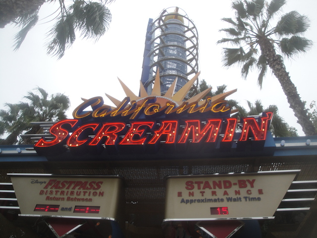
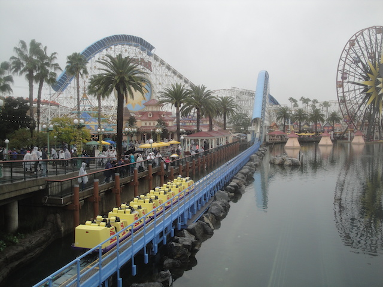
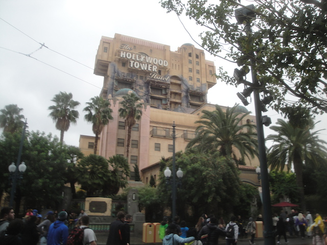
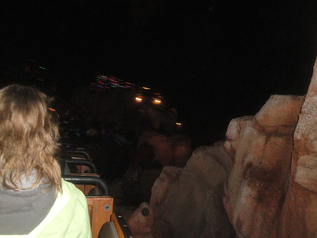
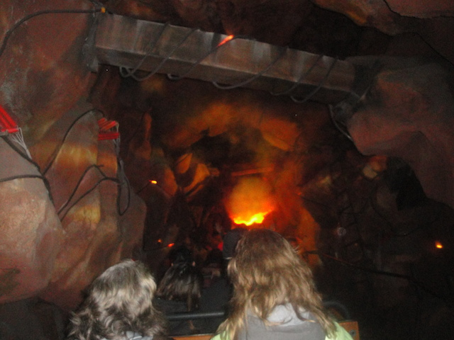

| |
Disneyland Xmas 2015
All right. Time for another visit to the Disneyland Resort. Now, we pretty much primarily visit Disneyland at Christmas time nowadays, though there clearly are exceptions. So yeah, let's go and have some fun.
Hmm. Not bad crowdwise. =)
 Well, we've got some time before we can use our Fastpasses for Space Mountain, let's get on some rides.
Well, we've got some time before we can use our Fastpasses for Space Mountain, let's get on some rides.
 "What the hell are you people doing!!? Don't you know about the abominable snowman!!?"
"What the hell are you people doing!!? Don't you know about the abominable snowman!!?"
Meanwhile in Tomorrowland...I mean Star Wars Land, they have greatly Star-Warsified the place to cash in on Star-Wars Mania, which is clearly the hottest new craze and Disney's new cash cow.
"May the cash...I mean force be with you."
"HEY!!! YOU'RE NOT PART OF THE STAR WARS FRANCHISE!!! GET THE F*CK OUT OF HERE BUZZ LIGHTYEAR!!!"
Well, after getting here early, our Fastpass Time has finally arrived for Space Mountain....I mean Hyperspace Mountain!!!
So yeah. Hyperspace Mountain is basically just Space Mountain, except with more Galaxies, the Death Star, and other cool fighter jets from the Star Wars movies.
 So yeah. It's not nearly as dark so they can show more galaxies and fighter jets. So you do end up seeing some of the track, much like during Rockin Space Mountain. Except this is MUCH better than Rockin Space Mountain.
So yeah. It's not nearly as dark so they can show more galaxies and fighter jets. So you do end up seeing some of the track, much like during Rockin Space Mountain. Except this is MUCH better than Rockin Space Mountain.
These are the people supposed to save the Galaxy from the First Order? We're all f*cked.
Random tip. If you ever get the oppertunity to go on a Disney Cruise, TAKE IT!!! THEY ARE FREAKING AWESOME!!!
 All right. That's enough Disneyland. Time to move onto California Adventure.
All right. That's enough Disneyland. Time to move onto California Adventure.
Someone had the bright idea of getting reservations for Storytellers. A resteraunt we have NEVER needed reservations for. And low and behold. We didn't need them. Not a problem, just a random fun little fact. =P
All right. It's been discussed everywhere the last two weeks. I couldn't not respond to this. Last week, all of the Disney Parks, as well as all of the Busch/Sea World parks, have added metal detectors to all their parks in response to the recent terrorist attacks in Paris and San Bernadino. No big deal. They've been doing this at SFMM for over a decade now thanks to their gang problem from back in the 1990s and it's no big deal. Yeah, it's not THAT big of a convienence. The thing is...these things don't work. AT ALL!!! It's all just Security Theater (where they add pain in the ass measures just for the illusion for the comfort of the paranoid, and way too many people are sh*tting themselves over ISIS). And honestly, yeah. That pisses me off, because you're wasting my time and not actually doing anything. I've known plenty of people who have EASILY been able to sneak knifes beyond these metal detectors. They don't do a damn thing unless the goal is to slow everyone down. I know Security Theater is primarily talked about in terms of Airport Security and the TSA, and yeah. It's all total bullsh*t. I hate the TSA and all that pointless crap, but I don't say anything, deal with it, and allow them to take naked pictures of me with the scanner (and laugh at my naked body), because I just want to be left alone, get through this stupid bullsh*t as quickly as possible, and just go to Europe and enjoy myself. And yeah, it's the same thing here. I'll bitch about it, but I won't do anything. I'm sure I'll adjust and ignore them, just like I do at SFMM, but it really frustrates me when we respond to terrorism by being terrorized and putting up more Security Theater for more illusions and pretending that we're doing something to solve the problem. I know this problem goes WAY beyond just theme parks, but I still don't like it anywhere.
Sorry. Littering assholes are going to ruin it all.
Read the caption above.
Notice anything about the weather? Yeah, it's raining. And while it didn't work miracles for us like it did 2010, but at least we didn't have to deal with the HORRENDOUS Maximum Capacity Crowds of 2009. So that was definetly good news.
Yeah. We may have not gotten lucky and don't have to deal with insane crowds, but yeah. It's still busy. We're NOT gonna get to do Carsland today.

Hey. You know what time it is? Yep, CA Screamin Time!!!

Luckily, the Screamin Line is never really that long, so we were able to get multiple rides in.
 And low and behold, we wound up winning the Front Row lottery. SWEET!!!
And low and behold, we wound up winning the Front Row lottery. SWEET!!!
 I'm not sure what was up with Screamin today, but it was particuarly forceful today. Especially in the loop.
I'm not sure what was up with Screamin today, but it was particuarly forceful today. Especially in the loop.
 HEY GUYS!!! HOWS IT GOING!!?
HEY GUYS!!! HOWS IT GOING!!?
"Check me out. I'm rockin out on CA Screamin."
And hey. Time for another one of our favorite dark rides. Toy Story Mania.
Just remember. Everything depends on this game.
Not bad, but I can do better.
 "Insert yourself here".
"Insert yourself here".
You know that trolley doesn't really go anywhere guys.
Hey. Time to spend more time in Animation.
 I love all the artwork in here. Easily one of the hidden gems of the Disneyland Resort.
I love all the artwork in here. Easily one of the hidden gems of the Disneyland Resort.
Today, they were showing you how to draw Baymax. Easily my favorite Disney character, and of course, I had to draw him with Fatass Stan. =)

Ooh. Our Tower of Terror Fastpasses are ready.
I'm not sure what was wrong with the ride. It was still fun and all, but there was definetly something screwy with all the special effects before the dropping.
Tis the season for Haunted Mansion Holiday.
Am I the only one thinking there needs to be more stuff for Nightmare Before Christmas? Seriously, let's have some more fun with all the other holidays and doors.
Hey Alex. It's the Hat Box Ghost. =)
 Hey Celeste. I used to scare you. Argh!
Hey Celeste. I used to scare you. Argh!
 Surprisingly, there was no line at all for Big Thunder Mountain. Thank you Fantasmic.
Surprisingly, there was no line at all for Big Thunder Mountain. Thank you Fantasmic.

"No, don't worry about anything Big Thunder Mountain Goat. Everything will be fine. And thanks again for helping out with our Holiday Fireworks. Just stand here with the dynamite."

In Memory of the Big Thunder Mountain Goat.
Well, everyone else wants to. Merry Christmas everyone else. We're gonna ride Small World.
*gasp* "HAPPY HOLIDAYS!!? HOW DARE YOU!!! YOU MUST SAY MERRY CHRISTMAS OR ELSE YOU'RE INFLICTING A WAR ON CHRISTMAS!!! BLAH BLAH BLAH!!!! HOW DARE YOU NOT BE A CHRISTIAN!!! I'M AN IDIOT!!! BLAH BLAH BLAH!!!"
"I just realized. Annoying, Repetitive? This must be the hottest new song!! Why isn't It's a Small World dominating the Billboard Top 100? I know they like this sort of crap!!" =)
Yeah. 2015 wasn't the worst year, but I gotta be honest. It hasn't been that good a year. ESPECIALLY the last three months. Hoping for much needed improvements and less bullsh*t in 2016.
*gasp* "MUSLIMS!!? WE MUST BAN THEM FROM ENTERING OUR COUNTRY, KEEP NATIONAL DATABASES FOR ALL THE ONES CURRENTLY HERE, CARPET BOMB THEM AND THEIR FAMILIES IN THE MIDDLE EAST, AND MAYBE WE'LL EVEN PUT THEM IN CONCENTRATION CAMPS!!!! Golly gee, I wonder why people are calling me a fascist and comparing me to Hitler?"
"Honestly, I kind of want to ride Small World with some of my other travelholic friends and just listen to them complain about how innacurate every country they represent is." =)
*gasp* "LATINOS!!? THEIFS!!! CRIMINALS!!! RAPISTS!!! BUILD A GIANT WALL!!!!"
Aww. Poor Rudolph. I know how tough it is being bullied simply for being gay...I mean having a red nose!!!
And yeah. That was our Christmas update for this year. I had a blast and look foreward to coming back.
Home
|